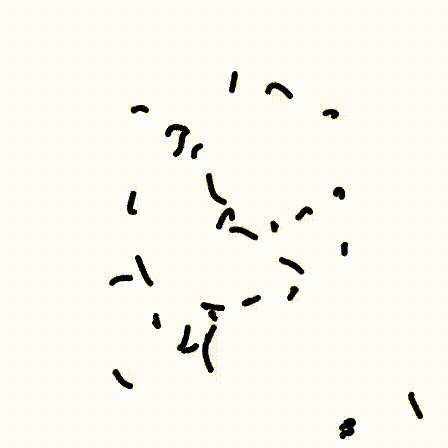
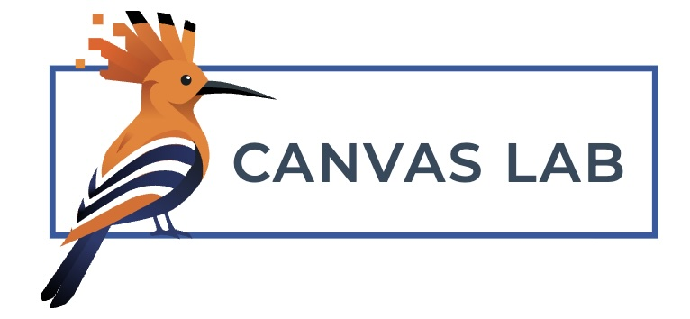
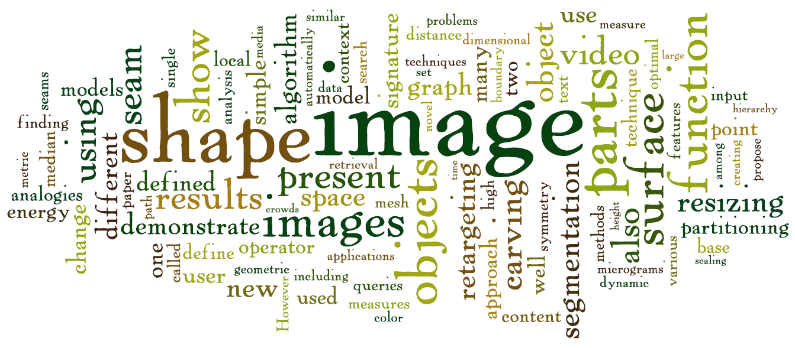

Hello...

I am a professor and the former Dean (2017-2021) of the
Efi Arazi School of Computer Science
at
Reichman University
in Israel (formerly the Interdisciplinary Center). I hold a B.Sc. and
M.Sc. cum laude in Mathematics and Computer Science from the
Hebrew University
in Jerusalem, and a Ph.D. in Computer Science (2000).
After my doctoral studies, I spent two years as a postdoctoral fellow at
the
Computational Visualization Center
at the University of Texas in Austin. Since then, I have held visiting
research positions at
Mitsubishi Electric Research Labs
(Cambridge, MA) in 2006, and at
Disney Research
& MIT in 2014. My academic and professional affiliations also extend
to the
Tokyo University, Tsinghua University,
Lawrence Livermore national laboratory, and several high-tech companies including PrimeSense (acquired by
Apple), Paieon Medical, Camera51,
Verisk Analytics,
ShiraTech, Donde
(acquired by Shopify), Shopify ,
Mappo, Google, and others.
My research interests span a range of fields, including image and video
processing, geometric modeling, computer graphics, digital fabrication,
visualization, and machine learning.
My publications in these areas can be found in
the research section
of this site. I also contributed to several patents. I am a member of
several professional societies, including
ACM SIGGRAPH,
IEEE Computer,
Eurographics, and
AsiaGraphics.
I received the AsiaGraphics
Outstanding Technical Contributions Award
(2023), was inducted into the
SIGGRAPH Academy (2024), and the EuroGraphics
Outstanding Technical Contributions Award
(2025).
Contact
Office Phone: +972-9-9527378
Email: arik@runi.ac.il
Efi Arazi School of Computer Science, Reichman University (the Interdisciplinary Center), Herzliya

